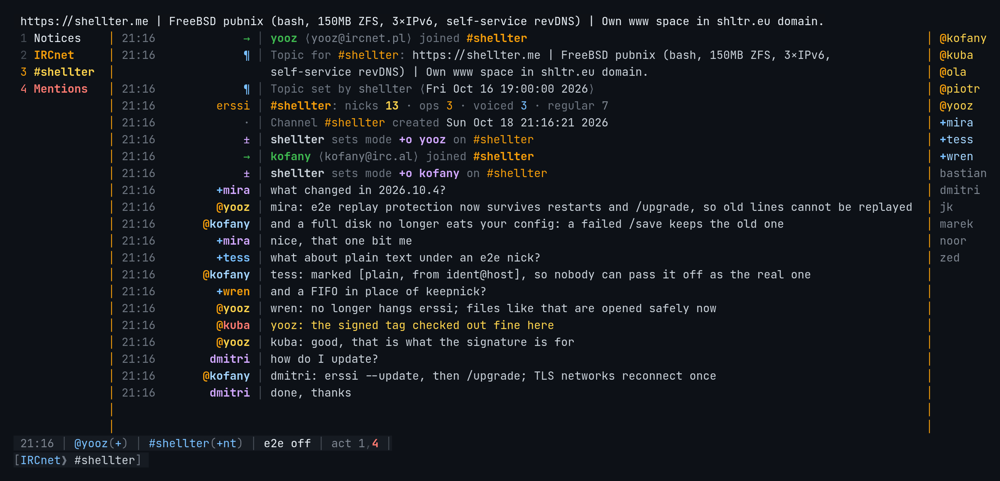

erssi Shellter Edition is the modern irssi with what an IRCnet user sets up by hand already built in: it keeps your nick, gathers your mentions, encrypts what you ask it to and updates itself from signed releases.
$ curl -fsSL https://raw.githubusercontent.com/y-o-o-z/erssi/main/ shellter-install.sh | sh
No root needed: about two minutes on a shell box, Linux or FreeBSD. It installs to ~/.local/opt/erssi and keeps its settings in ~/.erssi, so it runs next to irssi.

When someone holds your nick, erssi takes it back the moment it is free: through MONITOR where the server offers it, otherwise ISON, and at once when the holder quits or changes nick in a channel you share. If you had to connect on another nick, it does this on its own.
/keepnick · /help keepnick
Private messages, notices from people and channel hilights are collected in a background window and a log only you can read. With the terminal out of focus, a desktop notification pops up through iTerm2, kitty, WezTerm, Ghostty or foot, also inside tmux.
/mentions/search through your logs
RPE2E, natively and wire-compatible with repartee and its WeeChat and irssi scripts: XChaCha20-Poly1305 with per-sender keys. Your key goes only to people you accept.
/e2e on · /e2e accept
Side panels with your windows and the channel's nicks, every row of split windows with its own nick list, and saved layouts that come back after a restart exactly as they were.
/window new split · /layout save
fe-web shares the same session with a web client such as NexusIRC. On a shared box it listens on a Unix socket only you can open, and the password never travels in a URL.
/help fe_web
Every command has a help page, including erssi's own and the bundled scripts'. The first start asks for a network, a nick and the theme, then connects.
/help
Run the installer on your shell account.
It checks the system first and names any missing package, with the command to give your administrator. A missing meson or ninja it installs for you, into its own directory. Then it builds the newest release, runs the test suite and links ~/.local/bin/erssi.
Start erssi inside tmux, so the session survives logging out.
tmux new -s irc erssi
Update from a running shell whenever a release comes out.
erssi --check-update # is a newer release available? erssi --update # build, test and install it
In erssi, /upgrade then loads the new version without leaving IRC.
Every release tag is signed with one SSH key, and the installer and erssi --update build only a tag that carries that signature and points to the commit the installer records. A tag pushed by anyone else is skipped.
ED25519 SHA256:hF7dvX7vdTfqEsC9LHeujMoHf4NhWdqeBCvN6jXEDAw
git -c gpg.ssh.allowedSignersFile=utils/allowed_signers \
verify-tag shellter-v2026.10.2
The parts that face the network, the web frontend and end-to-end encryption among them, are fuzzed with libFuzzer, and the test suite runs under AddressSanitizer and UndefinedBehaviorSanitizer for every change. The build is hardened by default: PIE, stack protector, full RELRO, FORTIFY_SOURCE=2.
Keepnick is built in, and the nicks of the keepnick.pl script are taken over at the first start. Split windows get a nick list per row, keep their widths when the panels come and go, and a restored layout puts every window back in its place.
erssi is the modern irssi by Jerzy “kofany” Dąbrowski and the erssi-org team, on the core of irssi. End-to-end encryption follows RPE2E from repartee. Shellter Edition is maintained by y-o-o-z; its theme takes the colours of shellter.me.
Free software under the GNU General Public License, version 2 or later.